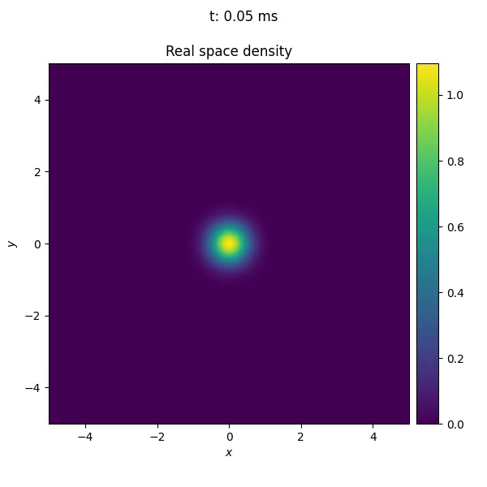
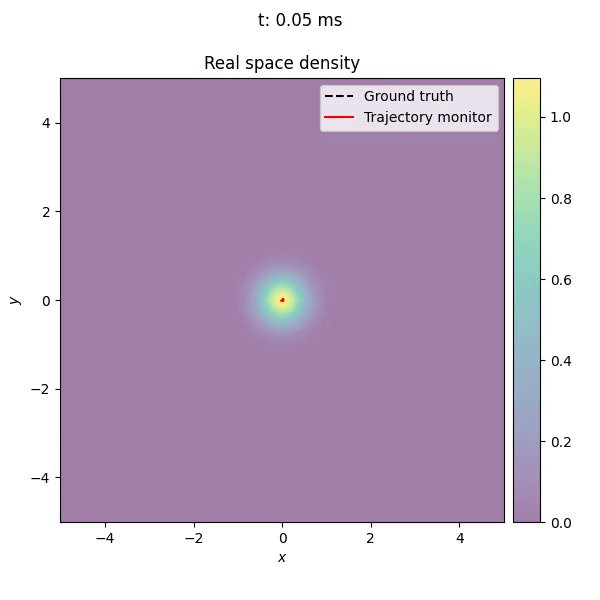

Defining custom callbacks#
Custom callbacks can be defined by subclassing the Callback class. In the following example, we will define a callback that monitors where the maximum of the wave function is located and plots it in the xy-plane.
We will use the DisplacedTrap implemented in Defining custom potentials to move the trap center along the custom trajectory
for \(\theta \in \left[0,\,2\pi\right]\).
Before implementing the callback, we can follow the same procedure as in Defining custom potentials, to see how the trap center moves along the trajectory.
{kind=link}
To implement the callback, we first define a class TrajectoryMonitor that inherits from Callback.
1from torchgpe.utils.callbacks import Callback
2
3class TrajectoryMonitor(Callback):
4 def __init__(self):
5 super().__init__()
All the subclasses of Callback are provided with an instance of the Gas class at runtime. Therefore, there is no need to pass the Gas instance to the constructor of the callback.
There are four moments in the time evolution of the wave function where the callback can execute custom code, namely before the propagation starts, before and after each step of the split-step Fourier method, and when the propagation finishes. The callback can execute custom code at any of these moments by overriding on_propagation_begin(), on_epoch_begin(), on_epoch_end(), or on_propagation_end().
In this example we will use on_propagation_begin() to initialize the arrays that will store the trajectory of the trap center, on_epoch_end() to compute the trap center, and on_propagation_end() to plot the trajectory.
Before the propagation starts, the callback is provided with the Gas instance (stored in the gas attribute), and with important parameters of the propagation (stored in the propagation_params dictionary).
Note
Currently, only the 'potentials', 'time_step' and 'N_iterations' keys are available for imaginary or real time propagation. In addition, for real time propagation, 'final_time' is also provided.
We use the N_iterations parameter to allocate the array that will store the trajectory of the trap center.
1from torchgpe.utils.callbacks import Callback
2
3import numpy as np
4
5class TrajectoryMonitor(Callback):
6 def __init__(self):
7 super().__init__()
8
9 def on_propagation_begin(self):
10 self.center = np.empty((self.propagation_params['N_iterations'], 2))
Once the array is allocated, we can use on_epoch_end() to compute the trap center. The callback is provided with the current iteration number, which we can use to store the trap center in the corresponding row of the array.
1from torchgpe.utils.callbacks import Callback
2
3import numpy as np
4
5class TrajectoryMonitor(Callback):
6 def __init__(self):
7 super().__init__()
8
9 def on_propagation_begin(self):
10 self.center = np.empty((self.propagation_params['N_iterations'], 2))
11
12 def on_epoch_begin(self, epoch):
13 idx_x, idx_y = np.unravel_index( self.gas.density.argmax().cpu(), self.gas.psi.shape )
14 self.center[epoch] = self.gas.y[idx_y].cpu(), self.gas.x[idx_x].cpu()
In the code above, we use np.unravel_index to convert the index of the maximum of the wave function into the corresponding coordinates in the xy-plane.
Note
The wave function of the gas might be stored on the GPU, while numpy arrays are stored on the CPU. Therefore, we need to move the wave function to the CPU before computing the maximum. This is done by calling self.gas.density.argmax().cpu().
Finally, we use on_propagation_end() to plot the trajectory of the trap center.
1from torchgpe.utils.callbacks import Callback
2
3import numpy as np
4import matplotlib.pyplot as plt
5
6class TrajectoryMonitor(Callback):
7 def __init__(self):
8 super().__init__()
9
10 def on_propagation_begin(self):
11 self.center = np.empty((self.propagation_params['N_iterations'], 2))
12
13 def on_epoch_begin(self, epoch):
14 idx_x, idx_y = np.unravel_index( self.gas.density.argmax().cpu(), self.gas.psi.shape )
15 self.center[epoch] = self.gas.y[idx_y].cpu(), self.gas.x[idx_x].cpu()
16
17 def on_propagation_end(self):
18
19 plt.figure(figsize=(5,5))
20 plt.plot(self.center[:,0], self.center[:,1], 'k-')
21 plt.xlim(self.gas.x[0], self.gas.x[-1])
22 plt.ylim(self.gas.y[0], self.gas.y[-1])
23 plt.xlabel(r'$x$')
24 plt.ylabel(r'$y$')
25 plt.savefig('/path/to/folder/trajectory.png')
The picture below, shows the trajectory of the trap center as measured by the callback, on top of the time evolution of the wave function.
{kind=link}
The callback monitors the trajectory of the trap center and plots it in the xy-plane. The trajectory is consistent with the custom trajectory defined by the DisplacedTrap potential, with small deviations due to diabatic effects during the evolution.